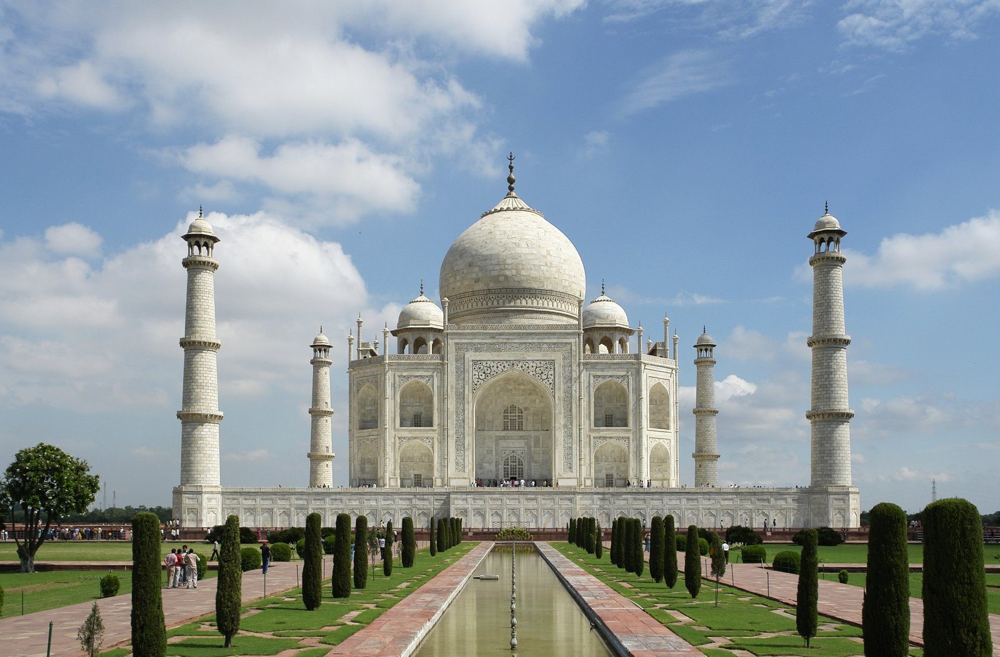
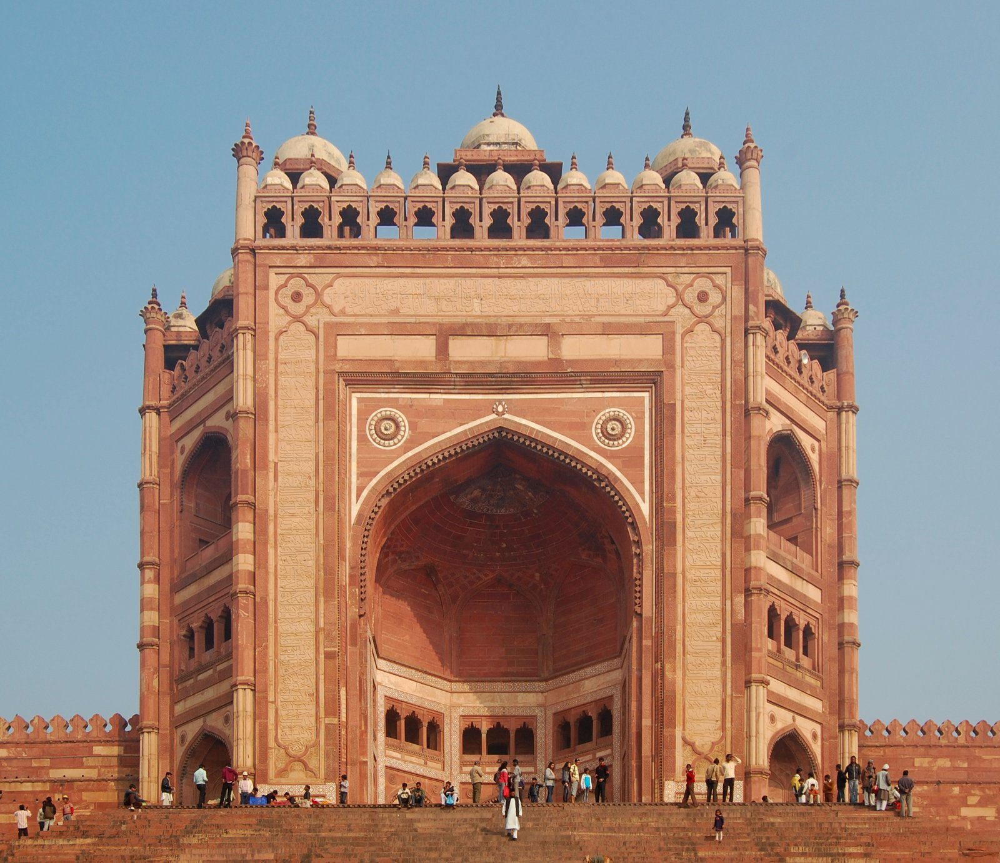

Image Viewer
Full Architectural & Monumental Inspection
100%
Medieval Indian History • Module 11: The Great Mughals
Founded by Babur with the revolutionary deployment of matchlock artillery at Panipat, and structurally solidified by Sher Shah Suri's administrative and currency innovations, the Mughal Empire reached unprecedented heights of religious syncretism under Akbar the Great, artistic and architectural splendor under Shah Jahan, before imperial over-extension under Aurangzeb Alamgir.

Pietra dura marble mausoleum on the Yamuna; jewel of Muslim art in India and UNESCO World Heritage site.
Lucent GK essentials covering dates, battle milestones, treaties, and cultural achievements.
Chagatai Turk born in Farghana. Defeated Ibrahim Lodi at Panipat (1526) and Rana Sanga at Khanwa (1527) where he assumed the title *Ghazi*.
Built Dinpanah city at Delhi. Defeated by Sher Shah Suri at Chausa (1539) and Kannauj (1540); fled to Persia for 15 years.
Coronated at age 13 at Kalanaur under regent Bairam Khan. Won 2nd Panipat (1556) against Hemu and Haldighati (1576) against Maharana Pratap.
Installed the golden Zanjir-i-Adl (Chain of Justice) at Agra. Married Nur Jahan (Mehr-un-Nisa) who exerted immense sovereign authority.
"Prince of Builders"; reign is celebrated as the Golden Age of Mughal Architecture. Built the Taj Mahal, Red Fort, Jama Masjid, and Peacock Throne.
Titled Zinda Pir (Living Saint) for personal puritanism. Reimposed Jizya (1679); executed 9th Sikh Guru Tegh Bahadur (1675).
Pioneered administrative and currency structures later adopted and perfected by Akbar.
Rebuilt the ancient Mauryan highway as Sadak-i-Azam (GT Road) from Sonargaon (Bengal) through Delhi to Peshawar (Attock), lined with shade trees and 1,700 traveler inns (*Sarais*).
Introduced the tri-metallic currency standard: pure silver coin Rupiya (178 grains) which remained the basis of the Indian monetary system, and copper coin Dam.
Surveyed cultivable land per *Bigha*. Issued Patta (title deed mentioning holding and assessed tax) and took Qabuliyat (written agreement of acceptance from the peasant).
Constructed his octagonal red sandstone mausoleum in the middle of a picturesque artificial lake at Sasaram (Bihar); built Purana Qila at Delhi and Rohtas Fort.
The Mansabdari bureaucracy, Todar Mal's Dahsala system, and the Navaratnas.
Introduced in 1571 AD, organizing all civil and military officers into 66 grades based on two distinct numerical ranks:
Formulated by finance minister Raja Todar Mal. Revenue fixed on the 10-year average yield and price trends (1571–1580 AD). State share was one-third (1/3rd). Land classified into 4 tiers:
From the towering Buland Darwaza of Fatehpur Sikri to the marble symmetry of the Taj Mahal.

Zoom DetailErected in red and buff sandstone; world’s highest monumental gateway.
White marble mausoleum flanked by 4 minarets on the banks of Yamuna.
Master every question on Babur, Sher Shah, Akbar, Shah Jahan, and Aurangzeb.
Loading flashcard...
Click card to reveal answerLoading answer...
Click to flip backLoading quiz question...
Full Architectural & Monumental Inspection